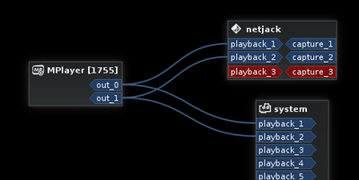

netJACK
Dieser Artikel wurde für die folgenden Ubuntu-Versionen getestet:
Ubuntu 14.04 Trusty Tahr
Zum Verständnis dieses Artikels sind folgende Seiten hilfreich:
Das Jack Audio Connection Toolkit ermöglicht Audio- (und MIDI-)Verbindungen zwischen Programmen auf einem Computer. Netjack erweitert diese Funktionalität und ermöglicht Verbindungen zwischen Programmen auf verschiedenen Computern über ein Netzwerk. Es gehört zur Kategorie der  Audio_over_Ethernet-Protokolle und kann Audio zwischen verschiedenen Programmen unter verschiedenen Betriebssystemen übertragen – sogar weltweit übers Internet.
Audio_over_Ethernet-Protokolle und kann Audio zwischen verschiedenen Programmen unter verschiedenen Betriebssystemen übertragen – sogar weltweit übers Internet.
Wie JACK ist auch Netjack plattformübergreifend verfügbar, enorm flexibel und auf niedrige Latenzen ausgelegt. Leider gibt es verschiedene zueinander inkompatible Varianten. Das hier besprochene Netjack1 ist die vielseitigste und am weitesten verbreitete Variante. Eine Übersicht über die anderen befindet sich am Ende des Artikels.
Netjack 1¶
Netjack1 ist Teil von JACK, muss also nicht zusätzlich installiert werden. Möglich ist damit einerseits die Übertragung von unkomprimiertem Audio im LAN, wenn es um möglichst hohe Qualität und niedrige Latenzen geht. Ebenfalls möglich ist aber auch die Übertragung von komprimierten Streams über langsamere Übertragungswege, wie etwa WLAN und das Internet. Beide Rechner werden samplegenau synchronisiert, um Jitter zu vermeiden.
Netjack1 unterscheidet zwischen dem "Master", der den Übertragungstakt vorgibt und dem "Slave", der dazu synchronisiert wird. Als Master wählt man normalerweise den Rechner mit dem hauptsächlich genutzten Audio-Interface, da das Interface des Slave über Zusatzprogramme eingebunden werden muss.
Vorbereitung¶
Diese Anleitung geht davon aus, dass auf den Rechnern, die verbunden werden sollen, JACK installiert ist und korrekt funktioniert.
Da sich die hier verwendeten Optionen teilweise zwischen den verschiedenen Varianten des JACK unterscheiden, muss bekannt sein, welche Variante installiert ist. Dazu öffnet man ein Terminal und gibt den Befehl jackd --version ein. Wenn die ausgegebene Versionsnummer kleiner als 1 ist, verwendet man JACK 1. Liegt die Versionsnummer zwischen 1 und 2, verwendet man JACK 2. Die Unterschiede zwischen den Versionen werden in den JACK-FAQ erklärt.
Um die Verbindung zwischen den Rechnern herzustellen, wird noch der Hostname oder die IP des Slave-Rechners benötigt. Den Hostname erfährt man, wenn man im Terminal hostname eingibt. Wie man die IP-Adresse herausfindet, wird im Artikel ip beschrieben.
Schließlich muss noch auf dem Master-Rechner (zu dem die anderen synchronisiert werden) der Jack-Server wie üblich gestartet werden (siehe JACK).
Benutzung¶
Als erstes kann auf dem Master-Rechner (zu dem die anderen synchronisiert werden) der Jack-Server wie üblich gestartet werden (siehe JACK).
Auf dem Slave wird nun in einem Terminal der Soundserver Jack mit dem Backend net gestartet.
JACK 1:
jackd --driver net ## oder jackd -d net
JACK 2:
jackd --driver netone ## oder jackd -d netone
Auf dem Master kann nun mit jack_netsource die Verbindung zum Slave hergestellt werden. Hier werden die Parameter der Verbindung definiert, der Slave wird automatisch konfiguriert. Der folgende Befehl öffnet eine Verbindung zu einem Slave-Rechner mit dem Namen HOSTNAME. Statt dem Namen kann auch die IP-Adresse angegeben werden.
jack_netsource -H HOSTNAME
|  |
| Graphische Darstellung der Verbindungen auf dem Master: Die Stereo-Ausgabe von mplayer wird über die ersten beiden Ausgänge der lokalen Soundkarte ausgegeben und parallel übers Netzwerk an den Slave übertragen |
Nun sollten auf Master und Slave neue Jack-Clients verfügbar sein, die z.B. mit QJackCtl oder Patchage mit anderen Programmen verbunden werden können. Standardmäßig öffnet jack_netsource je zwei Playback- und Capture-Ports sowie jeweils einen MIDI in und out. Man kann nun die Einstellungen anpassen. Dabei sollte man vor allem bedenken, dass jeder Kanal permanent Netzwerkbandbreite belegt.
| Parameter von jack_netsource | |
| Parameter | Beschreibung |
| -H | Hostname des Slave-Rechners. |
-i | Audio-Eingänge. Standard: 2 |
-o | Audio-Ausgänge. Standard: 2 |
-I | Midi-Eingänge. Standard: 1 |
-O | Midi-Ausgänge. Standard: 1 |
-n | Netzwerklatenz in JACK-Perioden. Standard: 5 |
-P kbits | Opus-Encodierung mit kbit/s pro Kanal aktivieren |
-h | Zeigt alle Optionen an. |
Wenn man zum Beispiel von einem Computer, der einen Film abspielt, den 5.1-Surround-Ton empfangen will (also sechs Kanäle), aber kein Audio senden muss und MIDI ebenfalls nicht übertragen benötigt wird, lautet der Befehl:
jack_netsource -H HOSTNAME -i6 -o0 -I0 -O0
Übertragung via WLAN und das Internet¶
Zur Übertragung im Internet oder über WLAN kann die Audioübertragung via Netjack mit CELT oder dem Nachfolger Opus encodiert werden. Beide Codecs erlauben bei der Kompression sehr niedrige und vor allem konstante Latenzen und bietet schon bei niedrigen Bitraten eine vergleichsweise hohe Klangqualität. Um die komprimierte Übertragung zu aktivieren, müssen Master und Slave den gleichen Codec mit der gleichen Bitrate verwenden. Die Optionen für Opus sind aus historischen Gründen inkonsistent.
| Master | Slave | |
| Jack 1 (CELT) | jack_netsource -H HOSTNAME -c KBITS | jackd -d net -c KBITS |
| Jack 1 (OPUS) | jack_netsource -H HOSTNAME -P KBITS | jackd -d net -O KBITS |
| Jack 2 (OPUS) | jack_netsource -H HOSTNAME -P KBITS | jackd -d netone -P KBITS |
Audio In/Out auf dem Slave¶
Da JACK auf dem Slave mit dem net-Backend gestartet wurde, repräsentiert der "system"-Client nicht wie üblich die lokale Soundkarte dieses Rechners, sondern die Netzwerkverbindung zum Master. Um die lokalen Ein- und Ausgänge des Rechners benutzen zu können, benutzt man die Programme alsa_in und alsa_out, die einfach im Terminal gestartet werden können.
alsa_in | Stellt einen Jack-Client zur Verfügung, über den die lokalen Eingänge angesprochen werden können. Er entspricht system:capture im Betrieb mit dem ALSA-Treiber. |
alsa_out | Stellt einen Jack-Client zur Verfügung, über den die lokalen Ausgänge angesprochen werden können. Er entspricht system:playback im Betrieb mit dem ALSA-Treiber. |
Parameter von alsa_in und alsa_out | |
| Parameter | Beschreibung |
-j NAME | Name des JACK-Clients. Standard: alsa_in bzw. alsa_out |
-d ALSA-GERÄT | Falls der Rechner mehrere Audio-Interfaces zur Verfügung stellt, kann hier das gewünschte ausgewählt werden. Siehe Nomenklatur. |
-c KANÄLE | Zahl der Ein- oder Ausgangskanäle |
-h | Angezeigt wird eine Übersicht aller Optionen. |
Netjack 2¶
Netjack 2 ist ein Master-/Slave-System. Es ist Teil von JACK2, steht also unter JACK1 nicht zur Verfügung. Er ist nur auf den Betrieb mit Kabelverbindungen im LAN ausgelegt. Eine Verbindung über WLAN oder über das Internet ist nicht vorgesehen. Außerdem ist es mit Netjack 2 nicht möglich, auf die Audiohardware der Slaves zuzugreifen. Neuere Versionen unterstützen Opus-Kompression.
Um Netjack2 zu benutzen, muss auf dem Master der Jack-Server gestartet sein (siehe JACK) und der Net Manager aktiviert werden:
jack_load netmanager
Die Optionen des Net Managers zeigt folgender Befehl an:
jack_load netmanager -i "-h"
Auf dem Slave startet man den Jack-Server mit dem Backend "net".
jackd -d net
Weitere Optionen können nach -d net angehängt werden. Im Gegensatz zu Netjack1 stellt man hier auch die Zahl der übertragenen Kanäle ein. Standard ist -1, das bedeutet, alle vorhandenen Hardware-Ein- und Ausgänge werden benutzt.
| Ausgewählte Optionen des NetJack2-Slave: | ||
| Parameter | Kurzform | Beschreibung |
--input_ports | -C | Zahl der Eingangskanäle (Capture) |
--output_ports | -P | Zahl der Ausgangskanäle (Playback) |
--midi_in_ports | -i | Zahl der MIDI-Eingangskanäle |
--midi_out_ports | -o | Zahl der MIDI-Ausgangskanäle |
--opus KBITS | -O KBITS | Opus-Kompression mit KBITS pro Kanal und Sekunde aktivieren. |
--help | -h | Angezeigt wird eine Übersicht aller Optionen. |
Andere Netjack-Varianten¶
JackTrip¶
Jacktrip verbindet im Grunde genommen zwei voneinander unabhängige Jack-Server, das heißt, die beiden Server werden nicht synchronisiert und können mit unterschiedlichen Sampleraten arbeiten. Eine Kompression des Streams ist nicht möglich. Die Übertragung kann in beide Richtungen erfolgen.
Zita-njbridge¶
Zita-njbridge ist ein Jack-Client zur Übertragung von bis zu zu 64 Kanälen unkomprimiertem Audio von einem Sender an einen oder mehrere Empfänger in einem LAN. Sender und Empfänger werden nicht synchronisiert und können mit unterschiedlichen Sampleraten arbeiten. Die Latenz kann an die Leistungsfähigkeit des Netzwerks angepasst werden.
Links¶
WalkThrough User NetJack
- InstallationsanleitungNetjack - Remote music collaboration with electronic sequencers on the Internet
- Fallbeispiel gemeinsames Musizieren mit Hydrogen und Netjack über das InternetJACK - Hauptartikel
- Erstellt mit Inyoka
-
 2004 – 2017 ubuntuusers.de • Einige Rechte vorbehalten
2004 – 2017 ubuntuusers.de • Einige Rechte vorbehalten
Lizenz • Kontakt • Datenschutz • Impressum • Serverstatus -
Serverhousing gespendet von